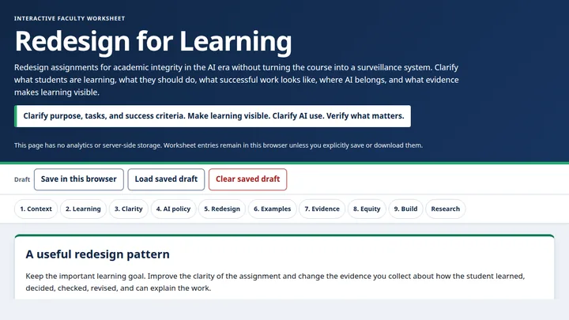
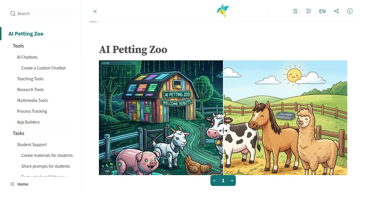
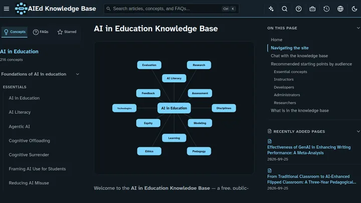
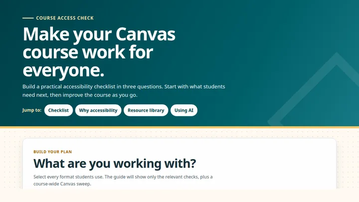
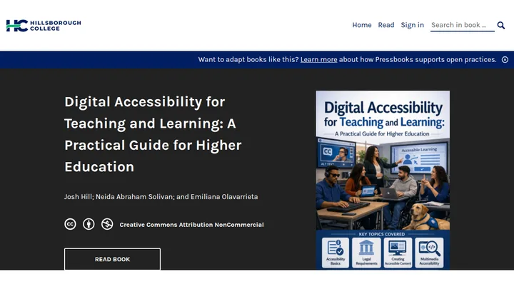

AI
Tools and resources for using generative AI in your teaching, and for understanding what the research says about it.
-

Assignment Redesign for Academic Integrity in the AI Era
An interactive worksheet for redesigning assignments around academic integrity. It walks through clarifying what students are learning, what they should do, what successful work looks like, where AI belongs, and what evidence makes learning visible — without turning the course into a surveillance system.
-

AI Petting Zoo
A guided, self-paced tour of AI tools and techniques for saving instructors time and enhancing student learning and engagement. Explore the tools, then try the example teaching tasks.
Start the tour Opens in a new tab -

AI in Education Knowledge Base
A research knowledge base on AI in education. Concept pages gather what the evidence shows, article pages summarise individual studies, and connected lists trace how the ideas relate.
Ready-made assistants, from this knowledge base
Browse the knowledge base Opens in a new tab · the assistants need a Google account -
Gemini Gem
Online Module Designer
A custom Gemini Gem for designing online learning modules. Work through the design decisions for a module, from outcomes and activities to assessment.
Open the Gem Opens in a new tab · Google account required
Accessibility
Resources for designing courses and materials that work for every student.
-

Canvas Accessibility Checklist
A practical Canvas accessibility guide that builds a checklist in three questions. Start with what students need next, then improve the course as you go — including where AI can help.
-

Digital Accessibility for Teaching and Learning
A practical guide for higher education, covering accessible course design, documents, media, and more. Published as an openly licensed book, so you can read it online in any order.
Read the guide Opens in a new tab -
Gemini Gem
Alt Text Generator
A custom Gemini Gem for writing alt text for images. Use it to describe images in slides, documents, and course pages so that students who cannot see them still get the information they carry.
Open the Gem Opens in a new tab · Google account required